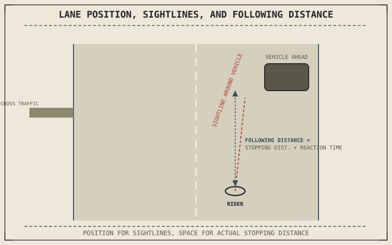

Every technique this part has covered so far assumes a rider choosing when and how hard to brake, corner, or accelerate. Traffic removes some of that choice — other vehicles' actions set the timing a rider has to react to, and the margin for error this book has otherwise been able to discuss in terms of physics alone now has to account for other drivers' unpredictability too.
Chapter 9.8 closed by naming traffic as the first of several specific riding environments this part turns to next. This chapter covers positioning and visibility within it.
Lane Position Sets What a Rider Can See and Be Seen By
A motorcycle's narrow profile lets it occupy different positions within a lane's width — left, center, or right of the lane — and that position changes both a rider's own sightlines around and through the vehicle ahead, and how visible the rider is in surrounding vehicles' mirrors. Positioning toward whichever side of the lane improves visibility into an intersection, around a vehicle ahead, or into a mirror a driver is more likely to check, is a direct, practical application of maximizing the information a rider has and the information other drivers have about the rider, adjusted continuously as the specific traffic situation changes.
The Space Cushion and Why It Needs Chapter 7's Numbers
Maintaining following distance in traffic is a direct, practical application of the braking distances Part VII's chapters established: the space a rider leaves ahead needs to account for the emergency stopping distance Chapter 9.4's threshold braking can achieve, plus a margin for reaction time before that braking even begins. This space cushion isn't a fixed number of car lengths regardless of conditions — it should expand on a wet or otherwise reduced-grip surface, since Chapter 6.4's friction circle and the road surface both directly reduce the stopping performance that space cushion is meant to guarantee.
Following distance in traffic isn't a habit or a courtesy — it's a direct application of the stopping-distance physics Part VII already established, sized to actually cover the threshold braking a rider might need to perform with no advance warning.

A motorcycle shown positioned in different parts of a lane relative to a vehicle ahead and a side road, with sightlines drawn showing what becomes visible or hidden from each lane position, and a following-distance gap sized to actual stopping distance.
Scanning for Cross-Traffic and Blind Spots
Because a motorcycle's narrow profile is genuinely harder for other drivers to notice than a car's, continuous scanning — mirrors, blind spots, cross-traffic at intersections, and vehicles that might turn across a rider's path — matters more for a motorcyclist than it does in a car, where the vehicle's own size does some of that visibility work automatically. This isn't a claim that other drivers are uniquely careless around motorcycles; it's a direct consequence of a smaller vehicle occupying less of another driver's visual field and expected-vehicle assumptions, which this chapter's positioning and scanning techniques exist specifically to compensate for.
A Common Misconception, Cleared Up Early
It's easy to treat "ride defensively" as a vague, generic safety slogan rather than a set of specific, checkable practices. Everything this chapter has described — lane position for visibility, a following distance sized to actual stopping physics, continuous scanning for cross-traffic — is a concrete, applicable technique with a clear mechanical or perceptual reason behind it, not an abstract mindset. Defensive riding is a checklist of specific positioning and attention habits, each traceable to a real cause, not a general attitude of caution alone.
Where This Leads
Traffic riding assumes moderate, variable speed. Sustained highway speed introduces its own distinct set of considerations — the aerodynamic forces Chapter 8.7 and Chapter 8.8 described, fatigue, and a different following-distance calculation. Chapter 9.10 turns to that next.
Key Concepts to Remember
- Lane position within a traffic lane directly changes both a rider's sightlines and visibility to surrounding drivers, and should adjust continuously with the situation.
- Following distance should be sized to actual emergency stopping distance plus reaction time, expanding further on reduced-grip surfaces.
- Continuous scanning for cross-traffic and blind spots compensates for a motorcycle's smaller visual footprint in other drivers' attention, not a claim that drivers are uniquely careless.
Cross-References
| ← Ch. 9.4 | Established threshold braking's stopping capability; this chapter sizes traffic following distance directly against that capability. |
| ← Ch. 6.4 | Established the friction circle's dependence on surface condition; this chapter shows following distance expanding when that circle shrinks. |
| → Ch. 9.10 | Covers highway riding and sustained speed, including the aerodynamic forces from Part VIII and their practical effect on riding. |